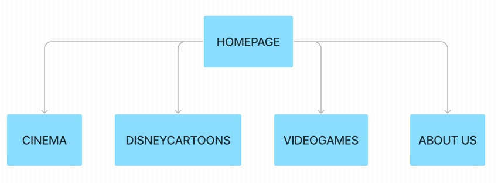
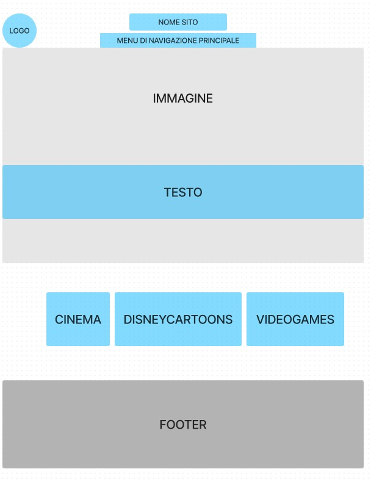

Childhood vibes è un sito che nasce con lo scopo di far rivivere alle persone momenti della loro infanzia.
L’intento è quello di riportare ricordi piacevoli alla gente che è cresciuta guardando film iconici, cartoni animati Disney o giocando a videogiochi dagli anni 80 ai primi anni 2000.
Si riportano più generi proprio per raggiungere più persone possibili.
Il nostro target utente include principalmente dalla generazione X alla generazione Z, ma sono ben accolti anche i bambini di oggi che sono curiosi di guardare film e provare videogiochi delle scorse generazioni!
- Gli obiettivi principali del sito sono raccogliere i grandi classici musicali e condividerli con più persone possibili, facendo riemergere in loro ricordi della propria infanzia. La piattaforma offre al pubblico varie playlist che vanno dagli anni 80 ai primi anni 2000 e ciascuna di quelle contiene alcune tra le colonne sonore più conosciute di film, cartoni animati Disney e videogiochi.
- Target utente: il sito vuole rivolgersi in particolare alla generazione X (comprende il periodo tra il 1965 e il 1980), alla generazione Y (comprende il periodo tra il 1981 e il 1996) e alla generazione Z (comprende il periodo tra il 1997 e il 2012), le persone nate in queste annate sono cresciute guardando i film e cartoni animati e giocando ai videogiochi da noi proposti. Del resto, sono benvenuti anche bambini che stanno crescendo in questi anni e che vogliono riscoprire questo mondo!
- Competitors: Sul web esistono già alcune piattaforme che propongono uno stile simile a quello che presentiamo qui su Childhood Vibes, come ad esempio: musicmedia, cpop.it e kulturjam. Questi siti però, raccolgono una certa tipologia di colonne sonore e canzoni del passato, mentre il nostro sito vuole proporre un’ampia gamma di canzoni e colonne sonore ascoltate durante l’infanzia proprio per raggiungere più generi e più persone possibili.
Struttura ad albero del sito:
Wireframe:
L'identità del sito emerge dai colori rappresentativi e dalla grafica minimalista. I colori riccorrenti sono tre: il bianco, una tonalità pastello dell'azzurro (#acd1fb) e una più scura (#4f81c7). La scelta di ricorrere soltanto a queste tre tonalità è stata presa al fine trasmettere un senso di ordine e coerenza all'utente, che in questo modo potrà orientarsi meglio all'interno del sito. Il carattere del sito è inoltre formato dalle due font ricorrenti: Geologica (san-serif) – usato per i titoli e il menù di navigazione – e RobotoSlab (serif) – usato invece per i testi scritti.
Il sito è stato creato da zero e i linguaggi utilizzati nella sua creazione sono HTML e CSS. Gli strumenti utilizzati invece sono:
- Bootstrap per l’impaginazione;
- Github per la pubblicazione online;
- Pixabay per l’immagine della homepage e le altre sezioni;
- Fontawesome, per le icone;
- GoogleFonts per la scelta dei font utilizzati;
- Paint.net per la modifica delle immagini;
- Inkscape per le immagini vettoriali;
- Spotify per le playlist;
- Instagram e WhatsApp per la sponsorizzazione del sito;
I competitors ci sono e hanno anche una distinta fama.
Sono numerosi i siti che raccolgono playlist di varie colonne sonore iconiche del passato, ma nessuno come il nostro sito le divide in base al cinema, i cartoni animati e ai videogames; e nessuno di essi si rivolge al nostro target.
Childhood Vibes vuole spaziare il più possibile e lasciare ampia scelta al pubblico sulla categoria di cosa ascoltare per far rivivere la propria infanzia.
Inoltre, il sito è fatto di pochi testi lunghi proprio per essere di facile comprensione ed essere alla portata di una persona di qualsiasi età, mentre i competitors si sono basati più su un unico target utente adulto, con grafiche spente e poco attraenti.
Ed infine, nel nostro sito abbiamo deciso di aggiungere un nostro repertorio di playlist personale che caratterizza la nostra infanzia, un elemento che concede all’utente di stimolarlo a crearsene una anche per sé prendendo ispirazione.
L’obiettivo del sito è quello di mettere a disposizione le canzoni che possono ricordare l'infanzia e il passato di ognuno.
Ogni persona ha la possibilità, attraverso la semplice configurazione del sito, di trovare le canzoni che hanno segnato le varie generazioni.
Collegato al primo obiettivo, quindi, il secondo obiettivo è quello di diffondere nuovi brani e far conoscere agli utenti le colonne sonore più famose dei vari decenni.
Come terzo ed ultimo obiettivo, il sito si pone di ampliare la conoscenza musicale e culturale dell'utente, tramite la divisione delle canzoni nelle varie playlist.
Grazie alle musiche si possono scoprire infatti quali film, cartoni e videogiochi sono stati prodotti nei vari anni.
Si punta ad arrivare a 45 follower su instagram e 35 like al post di presentazione
Target: utenti fra i 20 e i 50 anni, che hanno vissuto la propria infanzia negli anni di cui sono riportate le playlist.
-gruppo raggiunto attraverso l'utilizzo dei social
Messaggio:
- Ricreare i sentimenti e le emozioni dell'infanzia grazie all'ascolto di vecchi brani.
- Creare un momento di appartenenza generazionale.
- Far conoscere nuove colonne sonore, differenziando il bagaglio culturale e musicale ed oltrepassando i limiti posti dalle playlist quotidiane.
Utilizzo di social come Instagram e Spotify. Sfruttando le potenzialità che questi social hanno di interagire con i contenuti proposti dal nostro sito.
Abbiamo monitorato la sezione insight di instagram per controllare l'andamento della pagina.
I risultati ottenuti sono stati positivi rispetto agli obiettivi prefissati